The dissertation investigates the visual interpretation of heritage objects and practices providing both a theoretical framework for understanding the process of meaning-assignment and a formal ontology for grounding propositions about visual objects into a constituent-based framework. The thesis starts its investigation from the theory of the perception of heritage, illustrating the nuclear components used in the process of interpretation as a way to understand how the meaning of the object is constructed. The dissertation advances a functional theory for the classification of the perceptual experience, correlating perceived signals to situations and physical things. The resulting structure helps to examine the meaning assignment of cultural content and to study the framing of both physical objects and performative actions in our everyday visual experience. The broad relevance of the framework in the context of the heritage practice is made explicit using pictorial examples of a famous subject of Eastern and Western art: Saint George. Instances of the visual representations of the saint are used to demonstrate both the function of the theoretical framework as well as its alignment with some iconographical representation theories in Art History. The framework is then used to guide the formalisation of an ontology, constructed as an extension of CIDOC-CRM to sustain recording of interpretations as statements about the constitutional elements within a visual representation. The result, tested with artworks coming from the church of Asinou, a small Byzantine foundation in Cyprus, demonstrates the capacity of the formal ontology to record the denotative and the connotative dimension of iconographical objects, unveiling their contextual meaning through the clarification of symbols, constituents, use within liturgical performances and historical influences. The ontology is further linked and harmonised with 3D data annotations structures, providing a framework of operation for using the ontology to classify visual annotations within a three-dimensional environment. Linked and harmonised with the W3C Web Annotation Data Model, the ontology is used to test the creation of semantic 3D annotations within the Aioli project. After having addressed the feasibility of the ontology to document the meaning-assignment in visual work, the dissertation further elaborates on the validity of the recorded information, specifically the one grounded on digital mediations such as photographs or three-dimensional hyper-realistic reconstructions. In order to tackle the problem, a provenance-based framework for the documentation of reality-based recording is presented. The framework provides a semantic formalisation for recording the different steps of a digitisation workflow in order to document the accuracy and reliability of the process as well as to frame the results as scholarly product and not mere visual artefact. The result is a single graph of object, practice and meanings linked together.
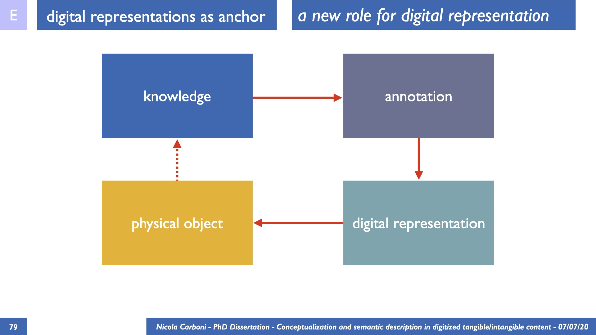
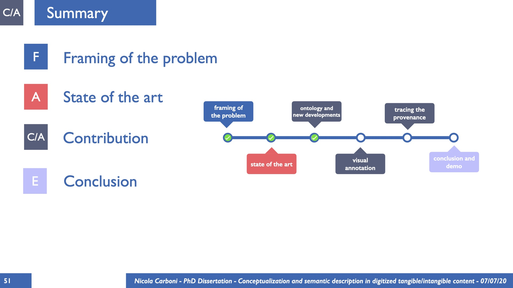
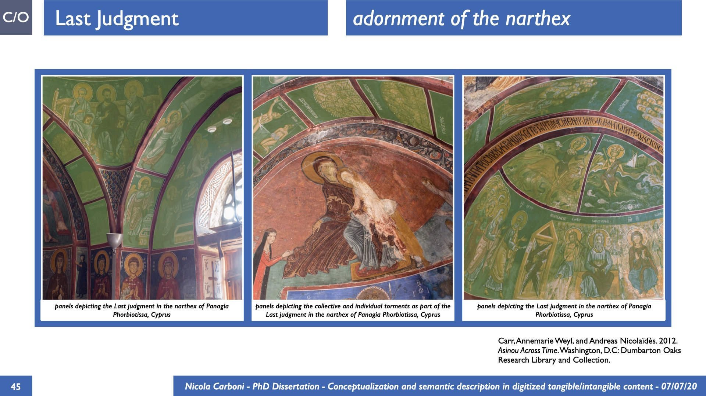
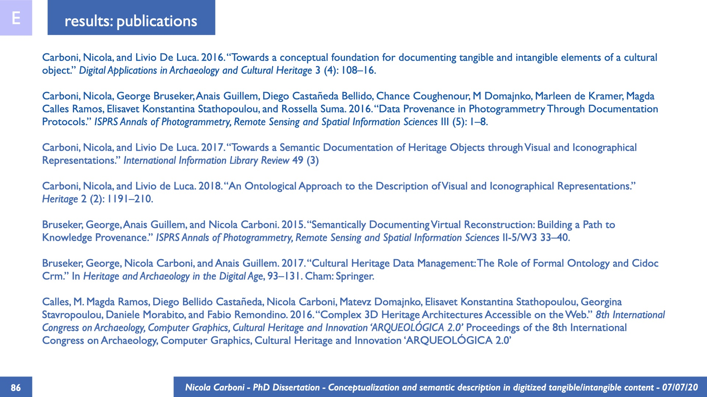
It is important to state that the work carried out in this thesis stem from a Marie Curie Project that, together with many here, I participated in: ITN-DCH. The initial training network for Digital Cultural Heritage was a European transnational and interdisciplinary project about the lifecycle of digital heritage research. It was carried out by 14 full partners, and focused on four main case studies. Its characterisation gives us an initial idea of the problem in the domain. More than 80% of the people involved in the project were working on diverse aspects of digitisation techniques, pipeline improvement, crowdsourcing or distribution of task. A very strong part of the project was, thus, devoted to the reproduction of existing or past objects. Only very few resources were dedicated to the intelligibility of the produced digital resources.
This was by no means a problem of the project itself, but it is very much so, a problem with the digital heritage discipline. This domain is more often than not limited to the creation of a large body of 2D/3D digital artefacts. This digital wunderkammer is a collection of aesthetic objects where numerous artefacts are exhibited without highlighting a wider perspective over the macro cultural exchanges that are responsible for their being and their social value. This type of approach reduces visual and material artefacts as inert heritage objects, flattening their historical and cultural functions.
However, knowledge about these cultural object is produced and shared across the research community, and purpose of the digital heritage domain should be to harvest this knowledge, using it to contextualise the object, interlink these information together in a global approach able to give us one or more perspective(s) into our past. Without such effort, large scale analysis of the past would be impossible.
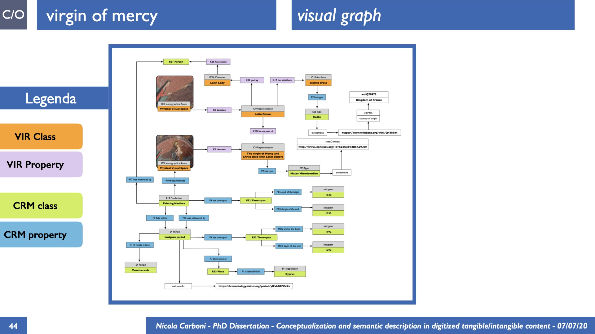
To reach such a goal, it is crucial to find a way to formalise our knowledge with respect to the digital object. I mention formalise, and not simply produce, because information technology requires formalisation. Computers necessitate and work with structure (given or auto-composed) and without a way to formalise our knowledge about the object and link it to the object itself, we cannot reach the goal of the discipline itself: using technologies to document the heritage.
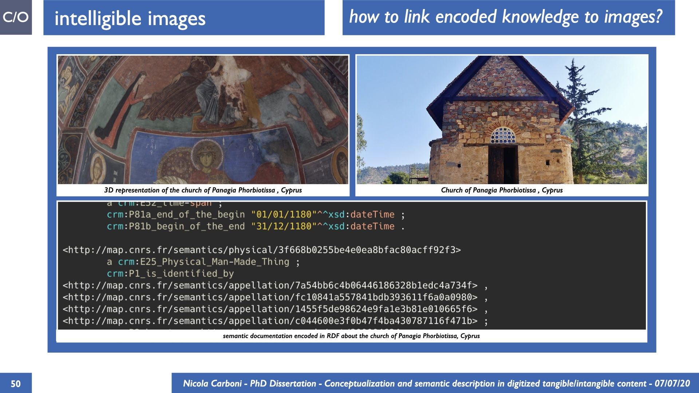
In order to do so, it is necessary to build a methodological bridge, creating a language that unifies diverse disciplines (e.g. logic, semiotic, heritage science, and semantics). Harmonising and interconnecting researches from these disciplines is a must for building something that can be of help, something that can fill the gap in the current studies and let us overcome the “duplicative” approach towards a macro approach to the study of heritage.
This work makes a step in this direction, proposing a way to use formal semantics for the description of visual representations.
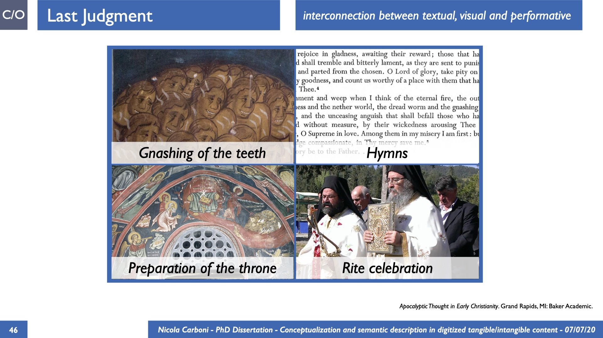
In order to better explain the problem and demonstrate the complexity and information richness that we can derive from just a small part of a heritage object we will look at a case study, and we will use it as a testing ground for our proposal. The case study is the church of Panagia Phorbiotissa in Cyprus, commonly known as Asinou. The church, built in the picturesque setting of the lower Troodos mountain in central Cyprus. is richly decorated and displays a wide variety of frescoes ranging from twelfth (foundation) to the early seventeenth century. For its stylistic and social value, it has been recognised as UNESCO World Heritage Site since 1985.
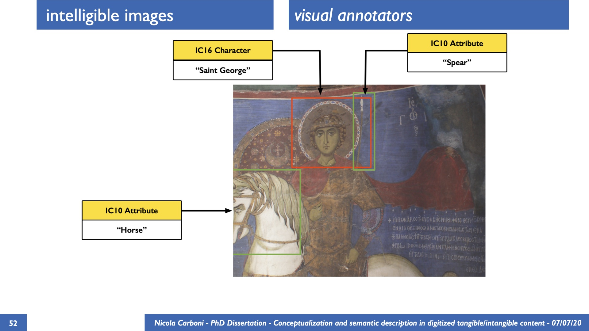
Founded in 1105/06, when Cyprus was an essential piece for the Byzantine naval power, the church has proven to be a testament of the story of the island, carrying Testimony of the Lusignan/Frankish domination started in 1191, as well as the influence of Venetian conquest in 1474.
Founded as a simple barrel-vaulted church, the original architecture was modified one century after the foundation (1115) with the addition of a narthex, and further in time because of the structural damaged inflicted by the frequent earthquakes that have struck the island.
Of the original decoration, only two-thirds have been fully preserved. In fact, following structural failures in the Naos, the new apse was painted in the late thirteenth century and fifty years later, in the middle of the 14th century, the entire central bay was repainted anew. This last work has created new imagery but also repainted parts of the vault and the walls covering parts of the original painting. As mentioned before, the Narthex has been a later addition to the church, and it was painted over several steps until the cycle of 1332/33 which draped the whole narthex.
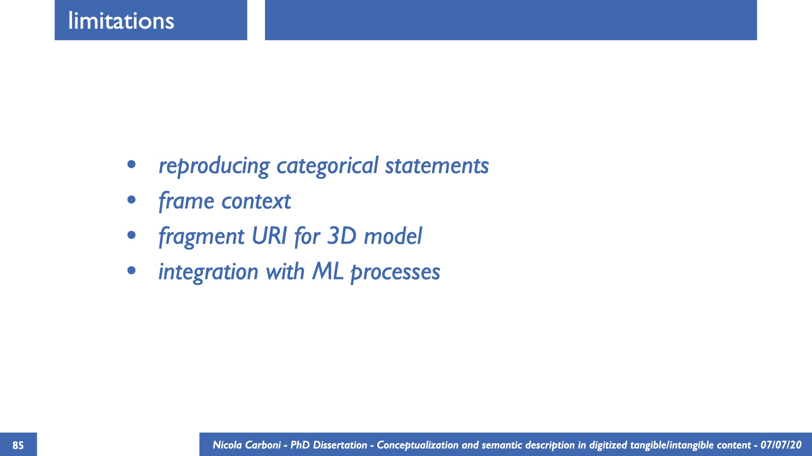
The church is very rich in iconography. The narthex has been adorned with various subjects ranging from donors to local saints, with a beautiful depiction of the Christ Pantocrator in the dome.
Except for the south lunette, which hosts the panel of Saint George, Anastasia & Anastasia and the virgin of Mercy, almost the entire rest of the iconography has been devoted to the Last Judgment and the Second Coming.
Painted in 1332/33 it is spread across the narthex and portrays eschatological visions and apocalyptic elements typical of the middle Byzantine period. comprising the River of Fire (or Fiery Stream), the Preparation of the Throne (Hetoimasia), the Angel Rolling up the Scroll the Collective and Individual Torments and the Deesis. While the representations are deeply rooted in the middle Byzantine iconographic tradition, the disposition has in Asinou a very distinctive character, because the scene adapts to the morphology of the church. Due to lack of available space, the author of the 1332/33 cycle in Asinou had to make some adaptations. Instead of the classical configuration, the elements of the Heavenly Court are dispersed across the dome. Thus, the Christ Pantokrator is the centre of the scene, surrounded by twelve medallions of angels and archangels. The apostles are depicted, divided in groups of three, in the pendentives. All figures are presented scattered around the narthex but linked together by their gaze.
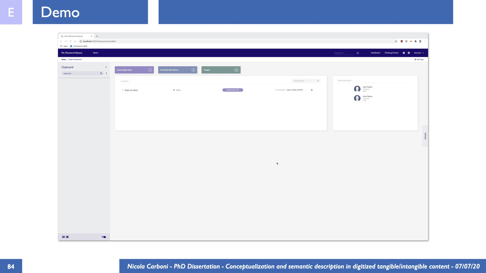
Many are the complex compositions in Asinou that reveal the need for the definition of formal identification criteria, but possibly the best example is the one of the deesis. A deesis is a composition which depicts the Virgin with Christ and John the Forerunner (Eastern Christian name of John the Baptist), in a single panel as the classical image from Hagia Sophia in this slide display
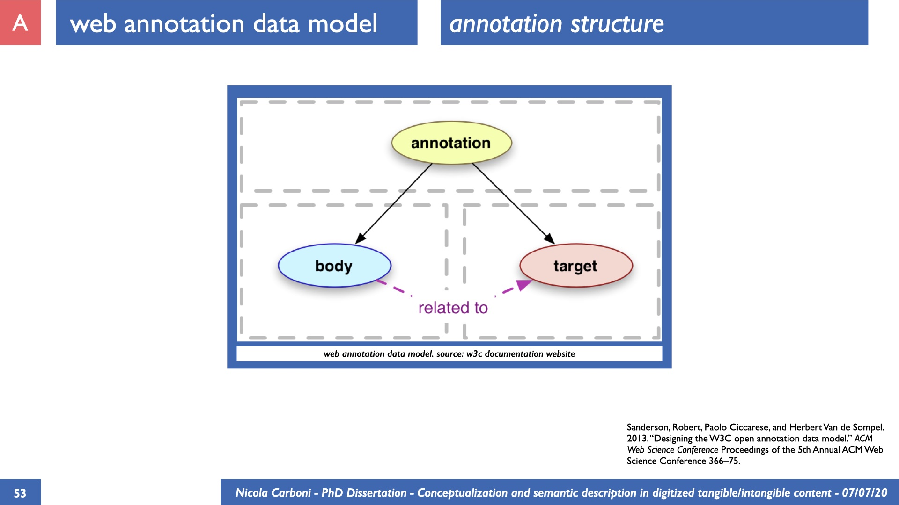
In Asinou the composition is decomposed because of the morphology of the church itself and the general lack of space. It is possible to find a single separated panel of the Virgin Paraklesis interceding with Christ on behalf of the humanity. However, the epithet Paraklesis is only relevant if, and only if, the Virgin accompanies Christ and John the Forerunner as a part of a Deesis.
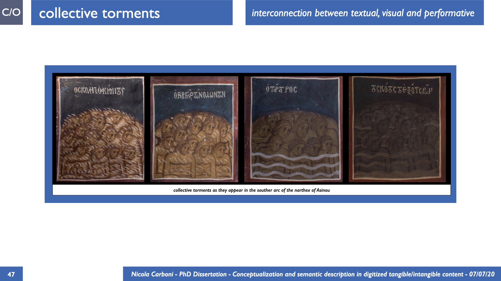
In the east lunette the narthex of the church of Panagia Phorbiotissa these three characters are present, but separated by a door and John the Forerunner is perpendicular to the figure of Christ
There is a spatial distance between the parts of the compositions, and an automatic, or even a manual segmentation, performed by a non-expert, would fail to recognise it.
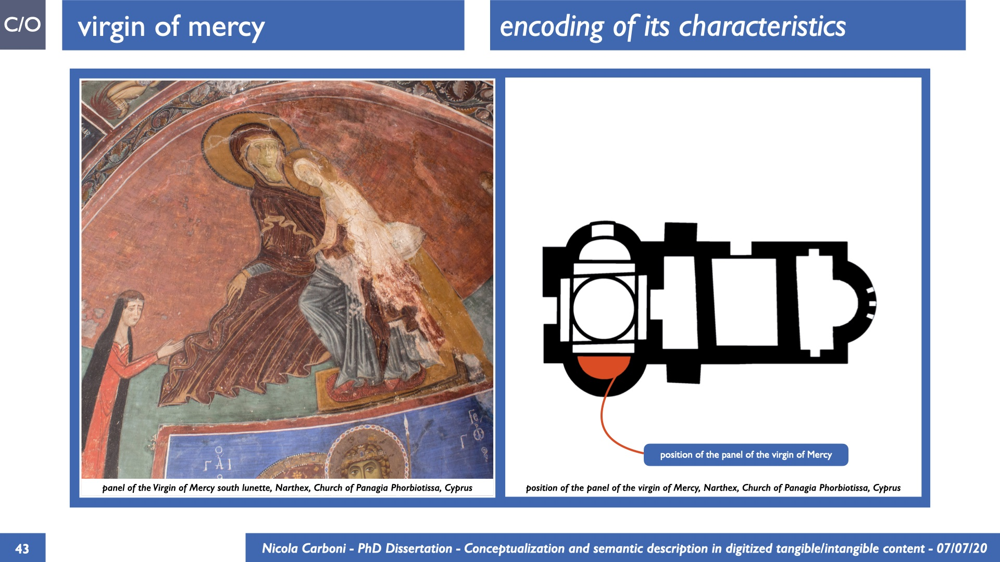
A Deesis is present also in the Naos of the church. In this instance, the figure of the Virgin Paraklesis is depicted together with John the Forerunner, in a very different schema than the usual tri-partition where John and the Virgin are on the opposite side of Christ. Also in the Deesis in the naos, the figure of the Virgin and the one of John the Forerunner are spatially separated from the figure of Christ. Moreover, while in the narthex, the Deesis was part of a bigger theme, the Last Judgment, it is not the case in the Naos.
We have, therefore, the same type of representation, a Deesis, depicted very differently both within the same church as well as in respect to the classical representation belonging to two different themes.
These examples underline the complexity of the scene and the uniqueness of each composition
But the example highlight also the nuances in the categorisation of the object and the need for overcoming the technological solutions based only on visual similarities, towards an approach which do rely on constituent elements of the image to classify its identity.
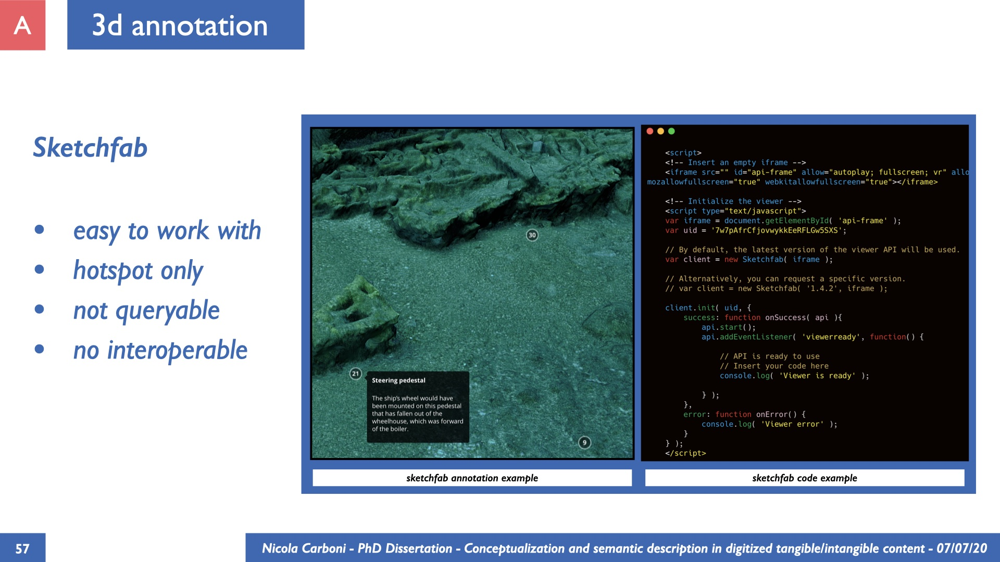
While the complexity can appear to be caused only by the morphology of the church, it is not the case. The complexity can be embedded also in the dynamic of the representation. As we saw for the deesis, a representation is not as fixed as it may seem, but it changes in time and space. A clear case in the Christian east and west is the representation of Saint George. While, in our imagery, the saint is typically represented fighting a dragon as we may see in Asinou, no dragon is present.
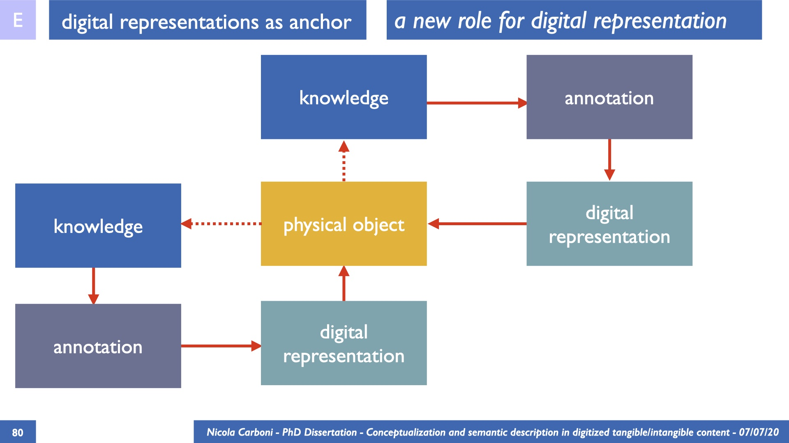
That is because the representation of Saint George has evolved over the course of the centuries. it was only from the 10th century that he started to be represented on a horseback killing a dragon, and It was only in the 12th century that the laceration on the wheel and the other torments started to get replaced by the rescue of the princess.
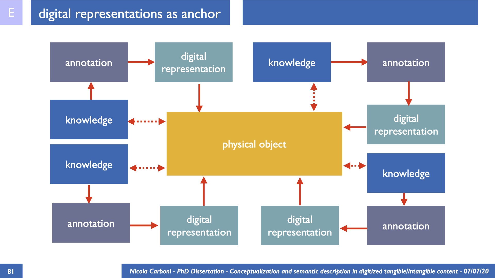
It is important to notice that the act of slaying a dragon did not have any privileged uniqueness ither. Similar representations do exist. An example that share many constituent elements would be Horus on the horseback, a small sculpture which depict the Egyptian god Horus about to stab the deity Set, the Egyptian god of the desert. In the catholic context instead, quite many were the saints who slew a dragon. The most famous ones are St. Andrews or St. Michael, but they are not the only privileged ones, and many more can be listed.
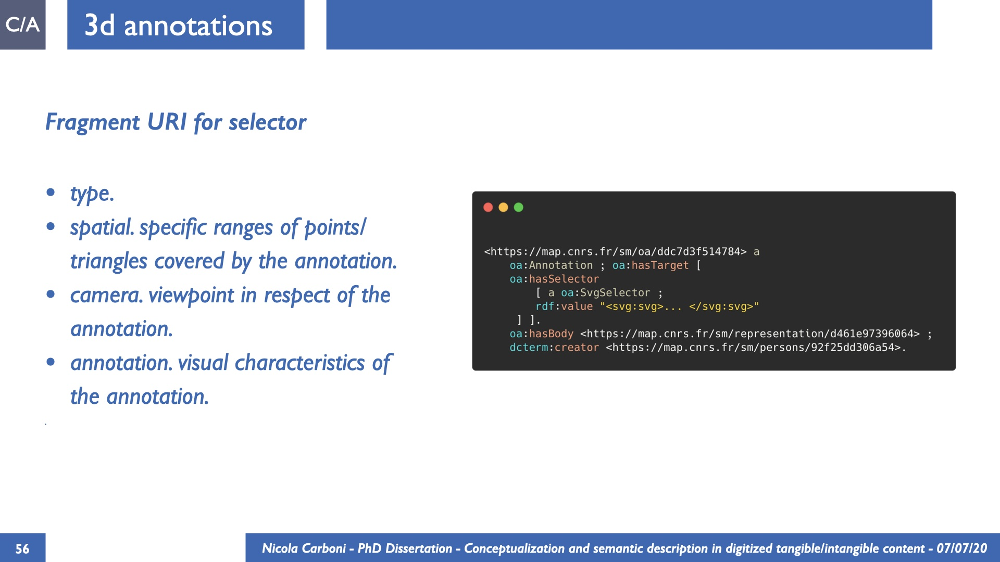
In the history of representations, many are the works of art depict Saint George, with very different perspectives, stories, characters and stylistic choices. The whole list of these representations appears to be linked to one another, but what is the common denominator between them? How can we link these interpretations together and talk about them as a whole? How do we determine identity?
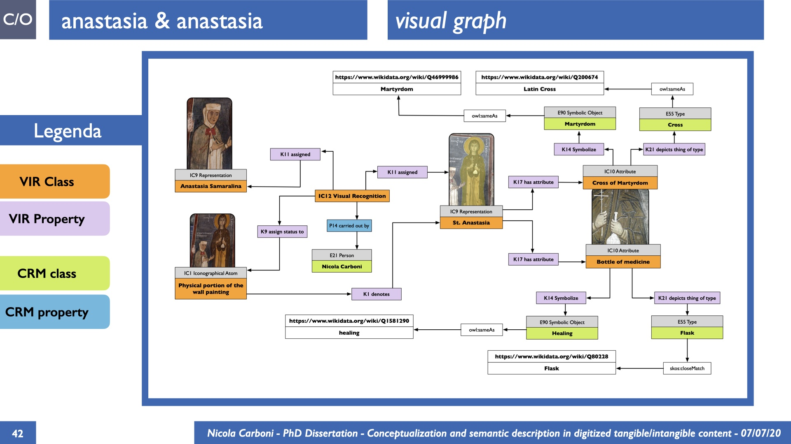
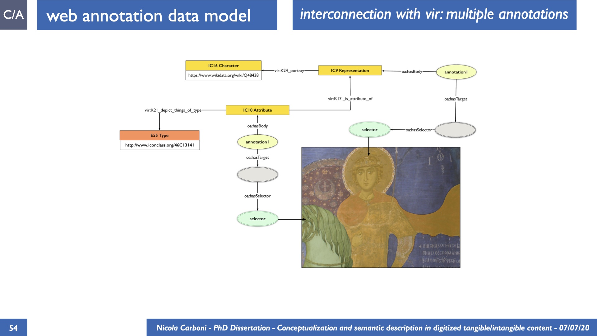
One way to proceed is the definition of similarity parameters which are based on constituent elements of the image.
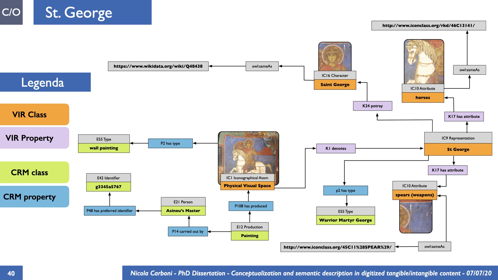
But the use of constituent elements, specifically if carried out into large multicultural environments, opens up, the problem of interpretation.
As we clearly saw with the deesis, our interpretation of the object depends on the characteristics we do see and resonate with and it is very much dependant on our general knowledge about its context and how we tend to classify it in our social arena. Depending on what we know and what we take into account, our categorisation of the object change, and the type of object we have in mind change too.
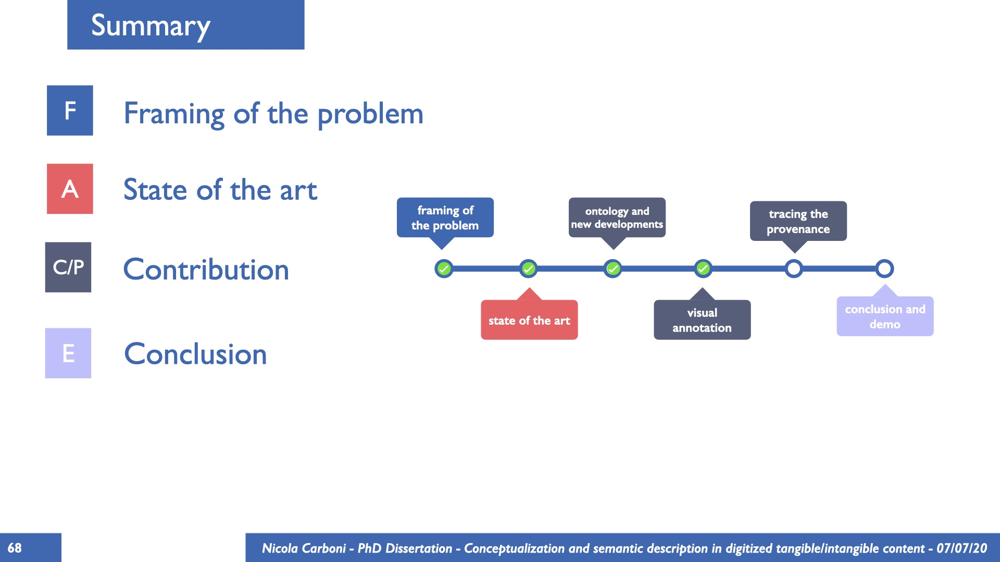
There is a necessity to formalise an agnostic model for the relationship between the representation, its elements, its symbolism and the context of production. Specifically, we do need to formalise these relationships between a large set of image data which belong to diverse iconographical traditions and are described and documented across many sources.
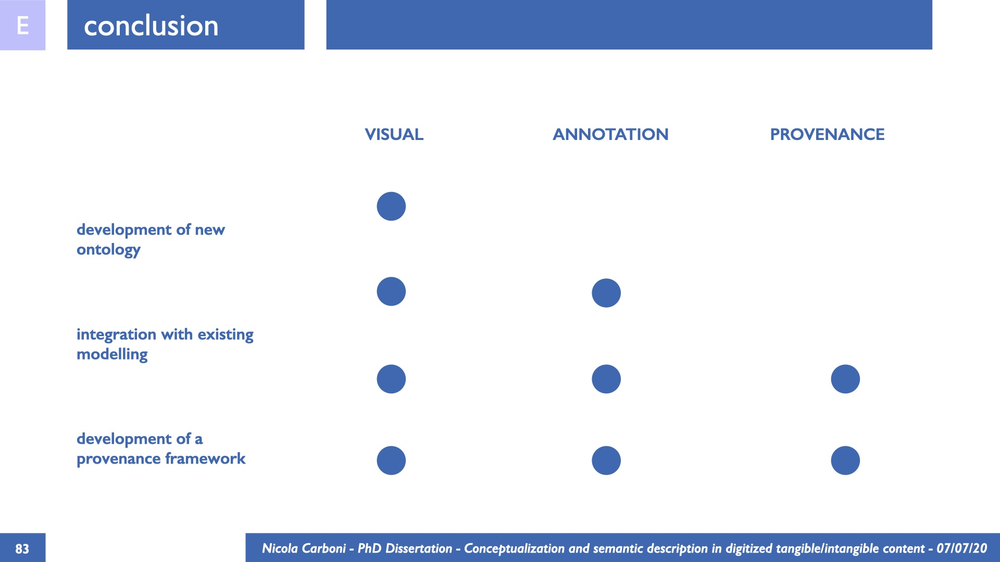
In order to overcome the problem of interpretation of a type, and analyse the change over time of the formalised features of a representation we introduced the concept of semantic marks. Semantic marks are functional components of a type and define a single characteristic (interpretation) of an object within a context (situation).
The formalisation of semantic marks helps classify the perceptual experience correlating perception to the type of an object, where a set of semantic marks can be used to recognise a specific object in a specific time and location.
The recording of the recognised semantic marks in respect of the object can help us see how the characteristics of the object itself change over time
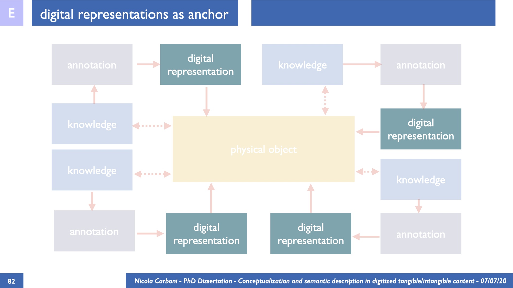
we can then envision to track these changes in space and time, looking at how some semantic marks are unique to an object or they are shared across several representations. But how we can achieve such a possibility? Computation can help gather interpretations, recognitions, constituent elements and interconnecting sources together, using an agnostic model for recording and sharing them.
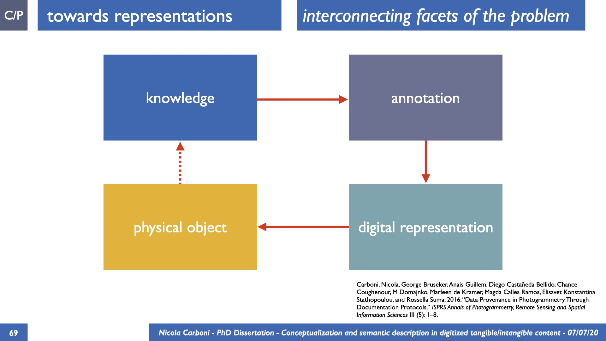
However, current knowledge recording interfaces in the cultural heritage domain rely on information structures that do have problems with distributed sources and input diversities. Classical SQL Database structures do not deal extremely well with multitude because they have been thought to be a closed formalisation of a pre-determined set of information, a feature that, by its nature, struggle to deal with large transdisciplinary data such as the cultural heritage ones. It is paramount to overcome the classical information organisation in order to create a distributed set of knowledge, which can be combined in an information network able to be used across the diversity of institutes who deals with heritage science, a network where everyone can establish a new facet of the problem and contribute with new information
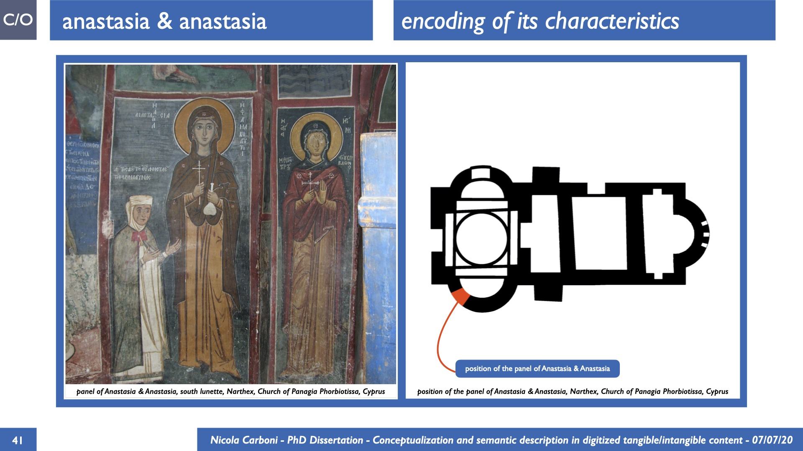
There are solutions to this problem. During the latest years, a new formal paradigm, which does not focus on the object but on its relationship with other entities, has been established and has resulted in the Semantic Web, a new series of frameworks for organising information. A major improvement has been the introduction of RDF, a new syntax for organising information that formalises statements in triples, formed by subject-property-object. This form of basic statement allows us to describe (reusing the subject and object) large corpus of information in a simple manner. The result is always a graph, where each statement is formed by a triple, a subject, property and object.
The advantage of this structure is the ability to link nodes together both locally and remotely, to define sameness between nodes and to reason across and derive new knowledge from existing information. This technical feature enables the reuse of external authorities, resulting in the creation of large distributed graph. These are all reasons to use RDF as a foundational technology in the thesis for creating a large scale corpus of iconographical data.
The RDF framework enables diverse organisations to collaborate, but it does not define the term of collaboration, leaving to its user the definition of the formalised vocabulary to be used for it. This vocabulary takes the form of an ontology, a computable shared logic model of a domain. An ontology provides an explicit account of the intended meaning of a formal vocabulary, and describe a specific conceptualization of the world. The end results are a series of class and property that condense the inner characteristics of a domain into a series of categories that reflects all the possible statements that can be made in that domain, shaping the possible discourse
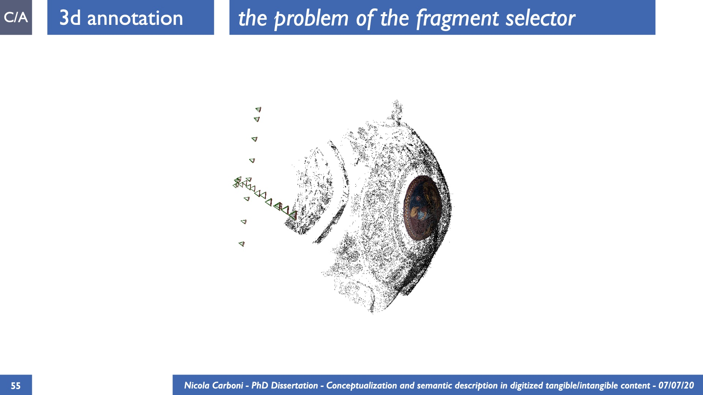
Diverse ontologies cover diverse domains. In the cultural heritage domain, CIDOC-CRM is the most well-known ontology. CIDOC-CRM is an empirically developed and aim at the documentation of heritage object in respect to their role within historical events and practice.
CIDOC-CRM it is widely adopted and it is composed by a core and a series of extensions. These extensions cover diverse subdomain or function. Specifically important are the library and archaeological domain, but some extensions have been developed with respect to the geographical, digital domain as well as for annotating the scientific process and argumentations over the object.
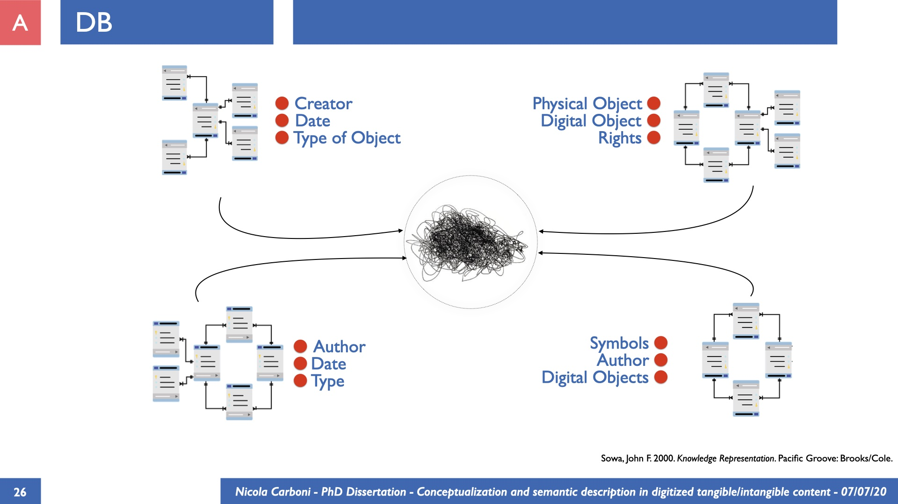
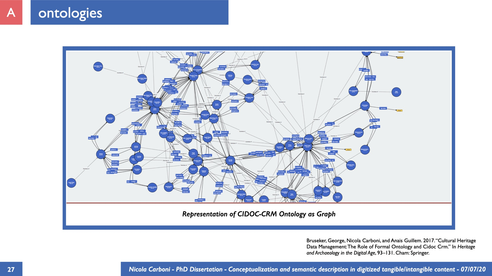
What it is missing is something that specifies and characterises the visual domain, something that does not focus on the material aspect of the object in a museum, but on the representative and symbolic value of that object.
It is for this reason that we introduce a new component to this family of extension the visual representation ontology or ViR
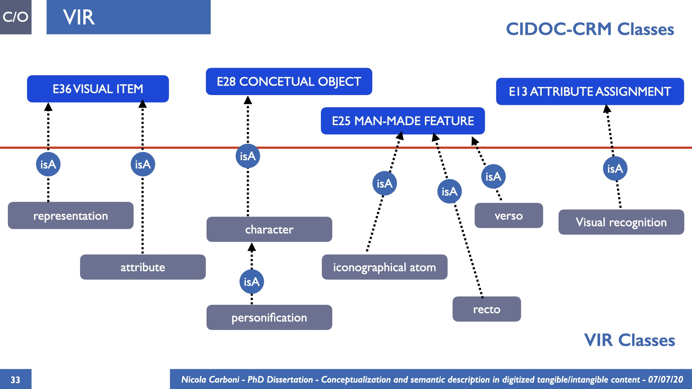
The visual representation ontology focuses on a basic set of classes for the description of the visual heritage, making clear their identity criteria and characteristics. It has been driven by both the theoretical investigation of the thesis and the actual work done on the iconography of the church of Panagia Phorbiotissa in Asinou
It has been constructed focusing on a small set of new classes, eight, and 20 new properties that interconnect the classes together and with other elements of CIDOC-CRM.
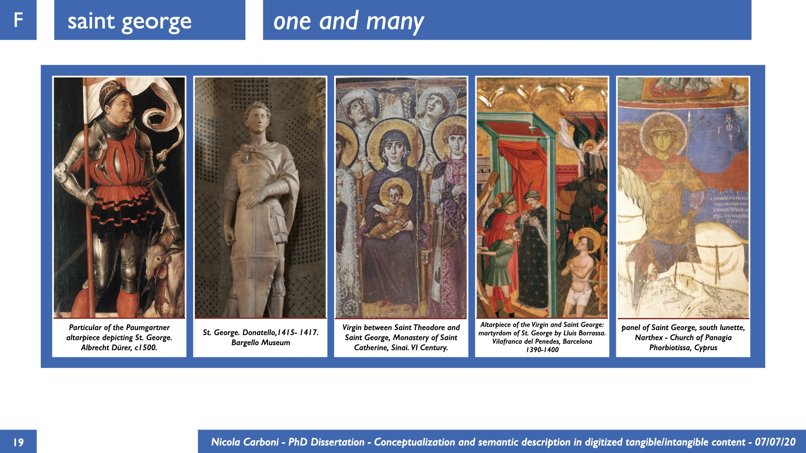
Built on top of CIDOC-CRM, reusing and extending its classes and properties, specifically focusing on the conceptual part.
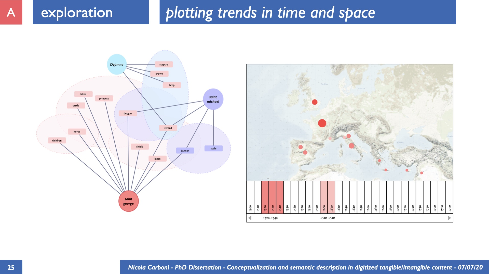
It is based on simple patterns which reflect basic functions of the visual. It enables the recording of the representational value of an object and defines its constituent elements, as well as the symbolism of such elements. Before diving into examples of its use, however,
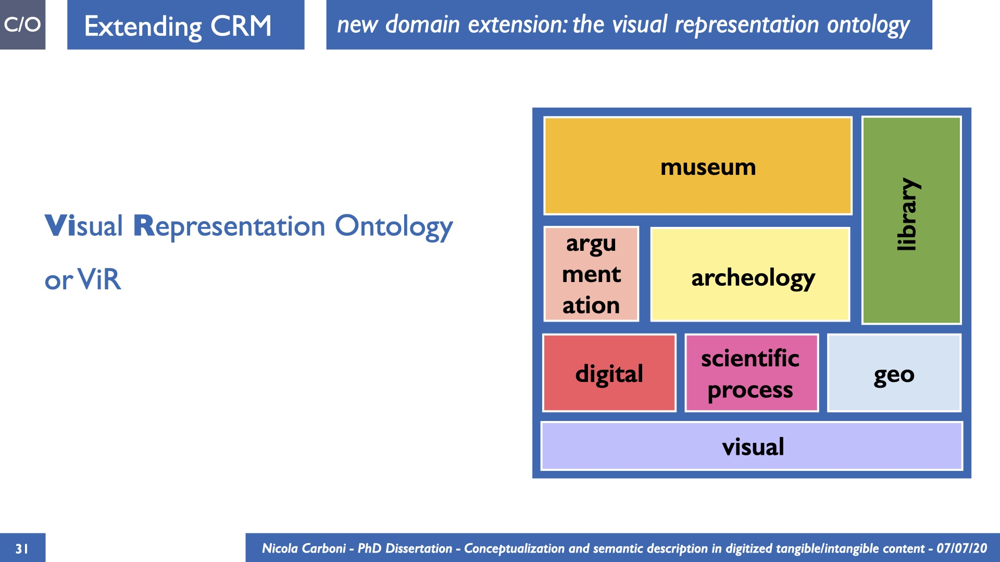
In order to see how the ontology has been employed for the formalisation of iconographical statements about the church of Asinou, we will present a series of visual graphs which are nothing else than a visual translation of the encoded data, We will start with the panel of Saint George in the narthex
We started the documentation of the panel from its creation.
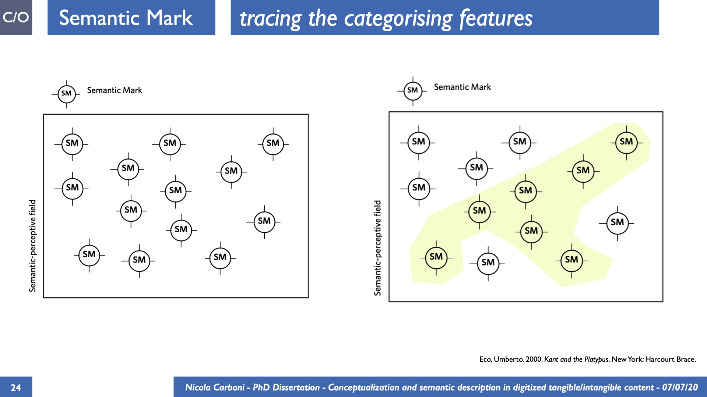
We use classes and properties of CIDOC-CRM to document (for demonstration purpose) the production of the panel itself
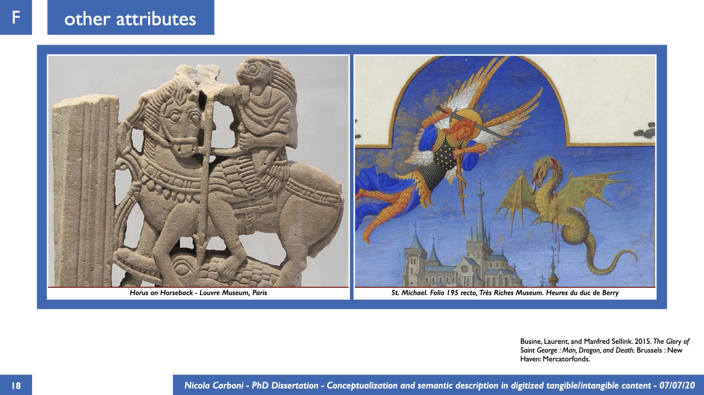
and the representation it denotes: Saint George. Here we face the challenge of linking Saint George with its representation type, as done by classificatory system such as iconclass.
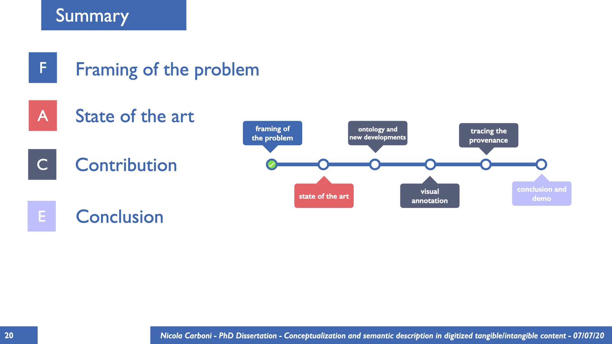
Instead of just assigning a type of representation from a vocabulary, using ViR we describe the identity criteria of the representation itself, such as its attributes and the character depicted.
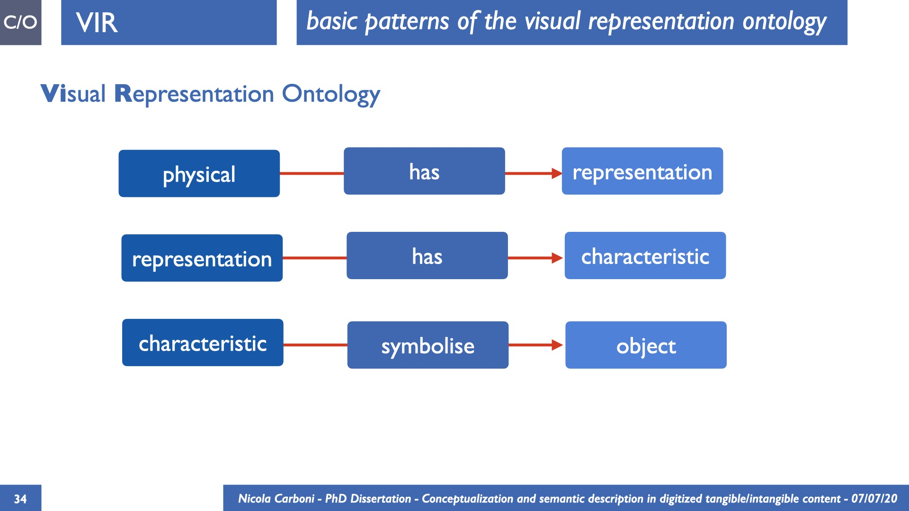
This enable the documentation to not flatten the diversity of the representation with a simple type (which need to conform to a iconographical tradition), but to fully describe the constituent elements present in the iconographical object, pointing at the character they depict and not confusing character with type of representation.
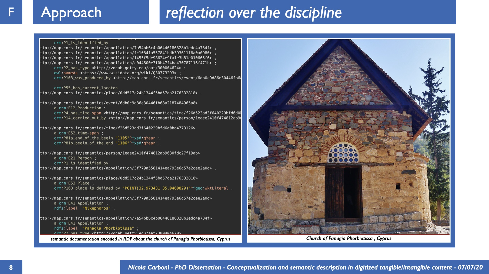
We can take a look at another example, the panel of Anastasia & Anastasia in the south lunette of the narthex, next to the panel of Saint George. The panel portrays St. Anastasia with the donor Anastasia Saramalina and presents the saint holding a bottle of medicine in her left hand and cross of martyrdom in her right. Also in this instance, we translate an RDF graph into a graphical example of the description of the saint
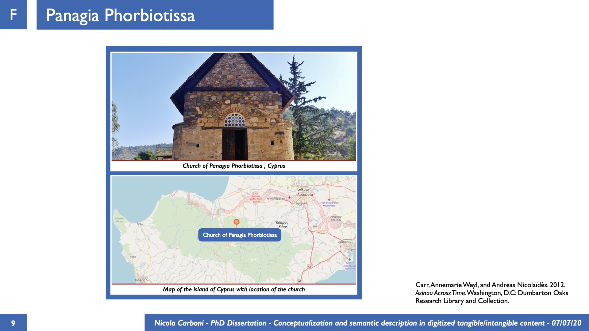
We document and encode the recognition of the panel as two distinct representations, St Anastasia and Anastasia Saramalina by a recorded viewer. The recognition activity creates an interconnection between the panel hosting the physical iconographical atom and the figure recognised. The example continues with the annotation of the two characterising attributes of the representation: the cross of Martyrdom and the Bottle of Medicine. These two are linked with the representation itself and further described, making clear the symbolism to the Martyrdom (in case of the cross) and the Healing (in case of the flask of medicine). Quite useful it is also the possibility to define the type of things depicted in the attribute, linking instance with a categorical element, which can be part of a pre-design vocabulary of types. This combination of a thesaurus and the ontology provide the necessary flexibility to easily retrieve this information using general categories while keeping the description of the instance agnostic to general categorisation. The type, as well as, symbolic object presented, can be linked with concepts from external authorities. In this example we use wikidata, a Knowledge Base founded on wikipedia, but could be anything else that expresses the generic category of the described entity.
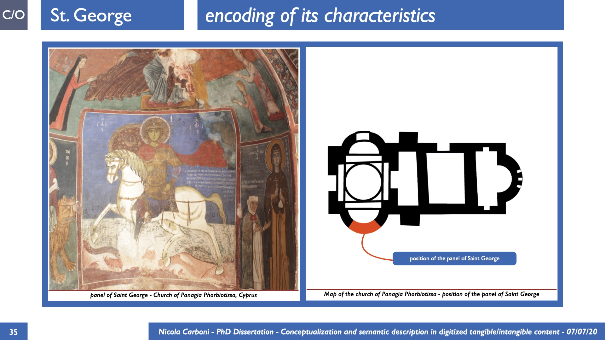
Another important panel that appears in the south lunette of the narthex of Asinou is the Virgin of Mercy with Latin donor. This panel portraits a typical Italian iconographical figure (the virgin of mercy), which was becoming traditional also in the east Mediterranean. The virgin of mercy is depicted next to a supplicant, a women dressed with typical Latin dress code originate from France and fashionable in Cyprus at the time. The panel testifies the presence of iconographical motif and fashion in Cyprus at the time, and we will use it as an example to show how we can contextualise it, using ViR and CIDOC-CRM.
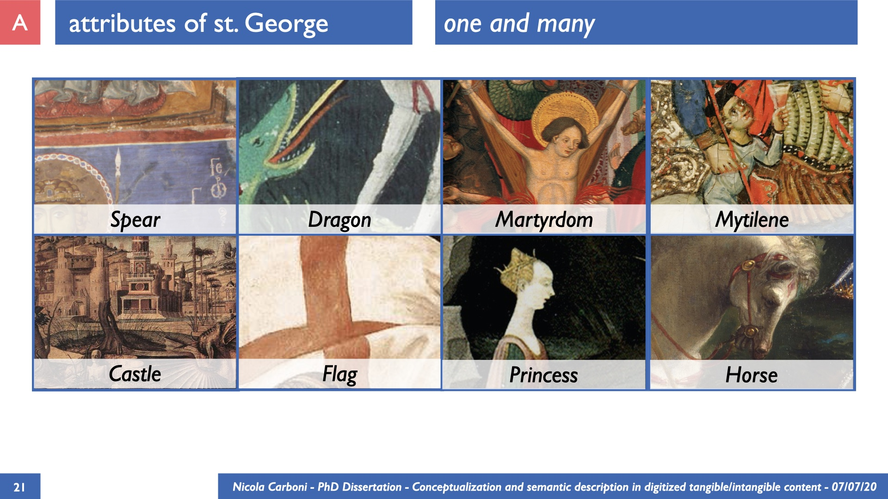
We start to ground the visual information into a bigger historical framework, defining the influence in the production of the painting by both the donor and the Frankish occupation of the island. The creation of the painting is linked in time with the Lusignan occupation of the island, from 1192 till 1474. This period is, moreover, linked with two other spatio-temporal gazetteers, perio.do and chronontology, which help in the retrieval but also in the browsing and visualisation of further documented periods.
The link between visual representations and historical information within a formal structure that can be queried is the first necessary step towards achieving a true digital iconology able to correlate visual culture and symbolism used. Only associating figurative expressions with their historical context we are able to accurately understand how the symbolic is derived and if some events had influenced it
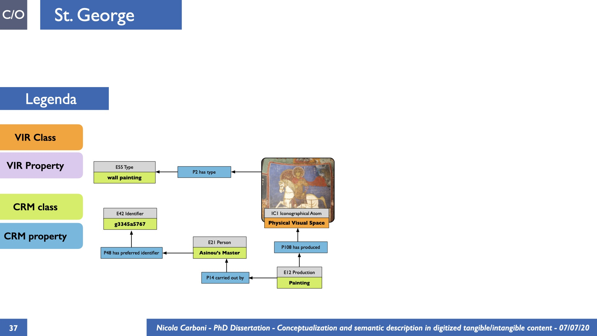
We mentioned that the rest of the narthex is draped with imagery of the Last Judgment. This imagery is derived from its largest part from a range of diverse biblical sources, including old and new testaments, the book of Revelation, the Gospels (especially Matthew, Isaiah and Daniel), but also apocryphal books.
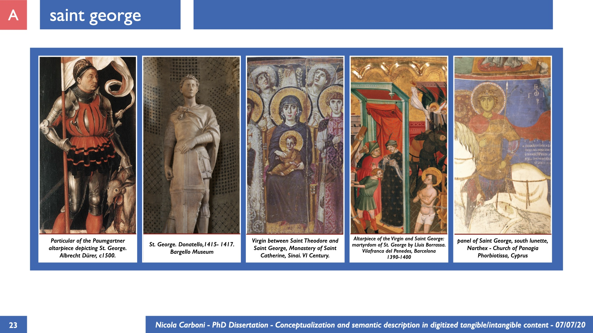
passages from the biblical texts, but are also referenced within the function. for example, the collective torments illustrate passages of text and hymns which were uttered at the time in the church. We do know because of the Triodion, a 9th-century hymnal for the Lenten-Paschal season which prescribes the propers to be used for the liturgical functions of the Sundays and weekdays of the Lent. This hymnal represents and conveys through the prayers the range of emotions, such as rage guilt and sorrow, fermenting in the mind of the devotees during the Lent and Easter period.
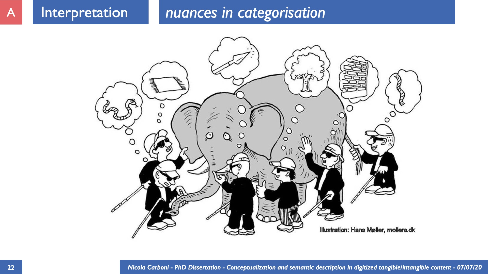
These emotions were not only shaped through the hymns and prayers recited during the Byzantine rite but also through the scenes depicted in the wall paintings adorning the church. A prayer would cite the punishment, for example the canticle one of the Sunday of the meatfare there is the proper:
“Terror and amazement seize me when I think of the fire of Gehenna that never shall be quenched, of the bitter worm and the gnashing of teeth.”
which do refer to a series of panels in the southern arch of the narthex of the church of Asinou.
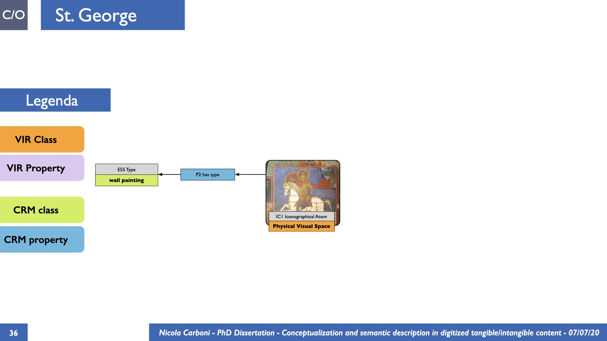
We can define and compose such interconnection between visual, textual and performative using a combination of VIR, CRM and another one of its extension: FRBRoo.
We can interconnect the textual reference present in the Triodion about the collective torments and link them with the Byzantine ritual performed on the Meatfare Sunday. We encoded the relationship between the portions of the texts from the Triodion with the representation “Gnashing of the Teeth” present in Asinou using a property from ViR (Illustrate). Another link is established between the section of Triodion which contained the odes of the Last Judgment (already linked with Gnashing of the Teeth) with the liturgical function of the Meatfare Sunday. Depiction and hymns are further characterised by their subject. Both are linked with the type Last Judgment, which is further linked with the Iconclass entry about it.
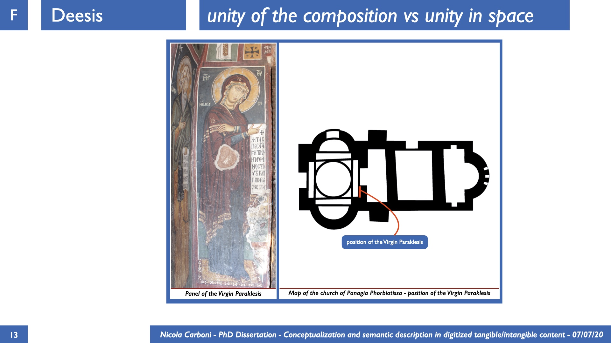
Many more at the possibility given by VIR, but we do not have the possibility to explore them all because
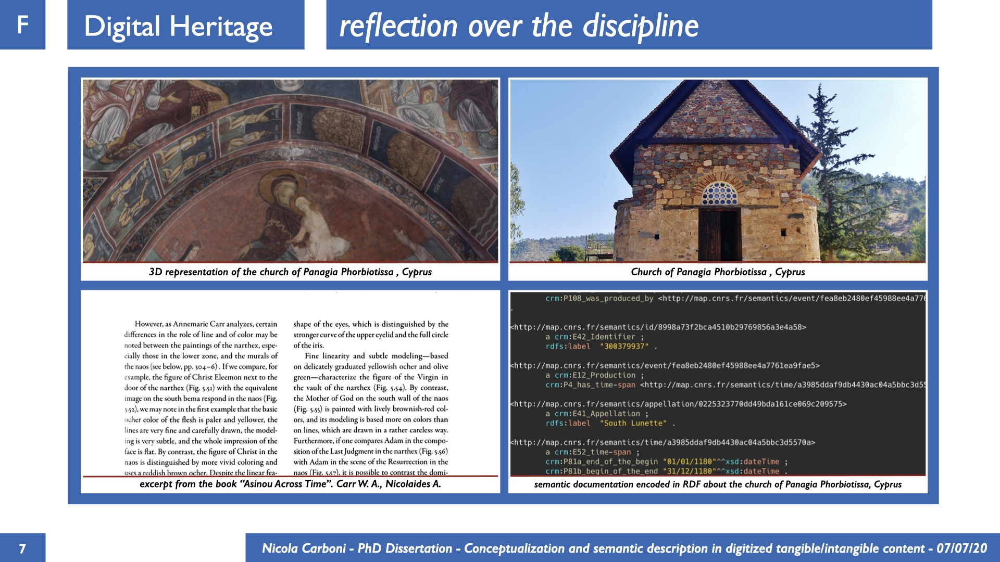
some small steps in our investigation are still required: one of them is the encoding of the relationship between media items, such as 3D and 2D with knowledge encoded using RDF. How we can connect these two worlds and use the images as the main gate to access the knowledge about their representation which we just demonstrate how to encode?
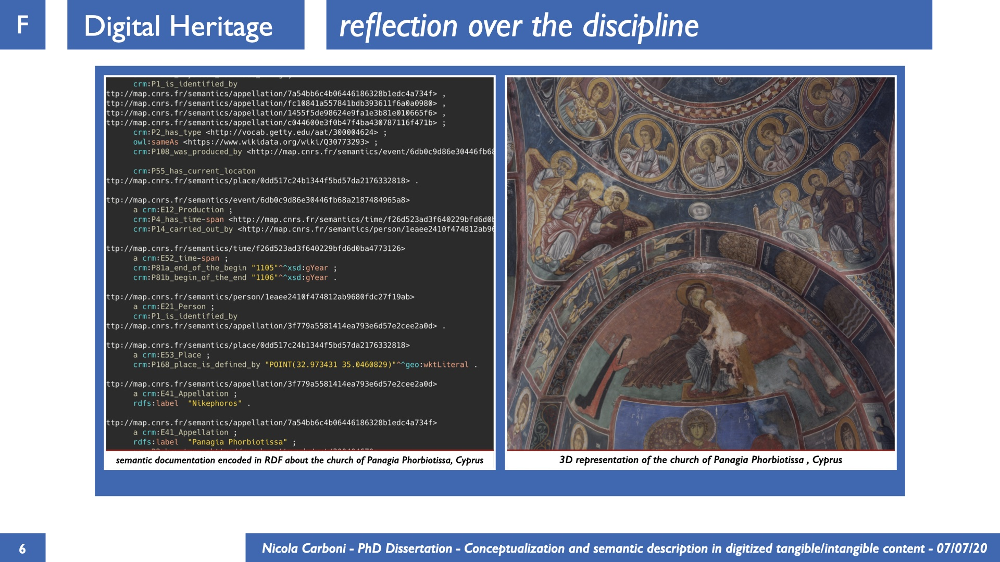
To be honest, the ontology has been developed from the very beginning having an answer to that question in mind: visual annotation
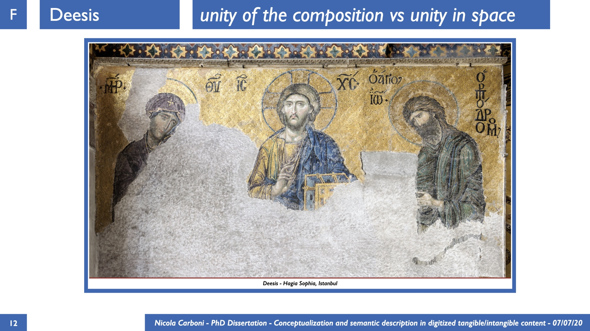
if we think about multi-agents classification of visual objects. In fact, one of the best ways to take advantages of such features would be to use it within the context of a visual annotator. For visual annotator, we mean tools which enable a user to select a segment or the entirety of a 2D/3D representation and make a statement about it. The use of these type of tools opened up the possibility to record, characterise and compare how human detect and define shapes in 2D/3D spaces, and to classify user-defined spatial areas as an instance of representations, correlating these area with their identifiable attributes appearing within the image and thus making the first step to create an organised iconographical corpus.
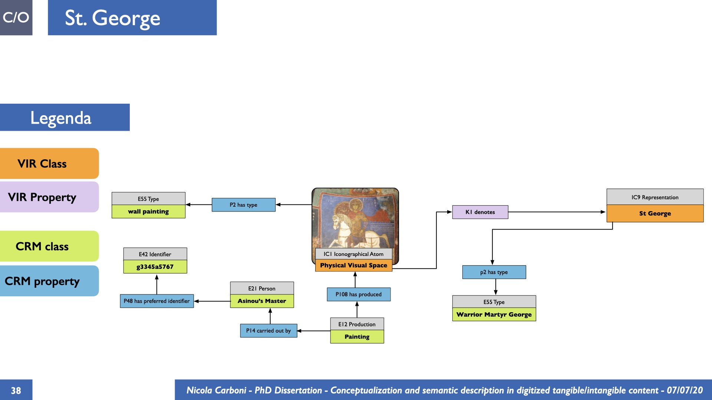
The very first step in this direction requires the clarification and formalisation of the connection between the digital object and a conceptualisation.
The creation of a shared model for recording the information about user-selected areas, have already begun in 2010 and it is still ongoing under the aegis of W3C. The developed model is the Web Annotation Data Model, which is the foundation for a shared architecture for web annotation services. The Web Annotation data model provides a framework for expressing the relationship between a triad of connected resources: the annotation, its body and its target.
The annotation is defined as an aboutness statement, a way a piece of information relates to a subject matter. The subject matter, in this triad, is the target, a digital resource subjected to the annotation. The third part of the triad is the body, the content of the annotation, the information which is related to the target.
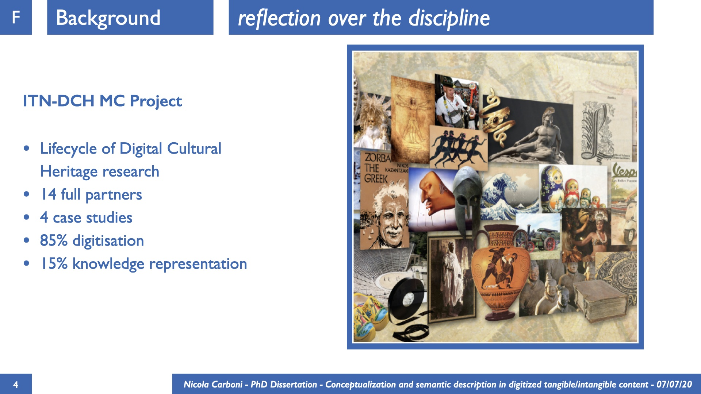
we are interested in defining the interconnections between a representation and the body of an annotation, in order to state what the annotation is about. What we would like to state is that a specific annotation is about an attribute, a representation, a personification or a character defined by ViR. According to the Web Annotation data model, an Annotation can be linked to other RDF classes using the property hasBody. The latter does not constrain the range, thus allowing classes from other ontologies to be used as the body of the annotation. Following this logic, we could be able to state that the annotation of a specific area of an image is about a class in VIR, specifically we will say that is about a representation that portrays someone, or it is an attribute, maybe of a representation created within the visual annotator itself
However, there is to consider a critical obstacle that has slow down the development of annotation systems: the interconnection between annotation and resource.
We mentioned that the target is the digital resource subjected to the annotation. Often the target is a segment of a bigger resource (e.g. part of the text, area of an image, volume in a 3D model) which is the object of interest in the annotation. The identification of what constitutes a target and its selection depends on the type of targeted object. Each media and encoding is structured differently and appropriate computational methods are required to identify its part. Once selected, to be used together with the Web Annotation data model, the segment has to be identified using a Fragment selector (or Fragment URI), a string of characters which identifies something specific as a function of the document, usually a URI pointing at an SVG (for 2D images) or an XPath pointing to a textual resource.
Currently, a standard fragment URI has not been specified for 3D objects, but the thesis proposes the basic building block for it based on Typological, Spatial, Camera and Annotation dimensions. The proposal lay down the foundation of a possible high-level API configuration, and it can be used as first draft of requirements to gather a community together to further discuss and define the issue. Unfortunately, this is a community issue and not a technical one.
However, while not standardised, there are way to create annotations for 3D objects which are worth looking at, and see where we are at and what we can do currently to integrate ontologies with them.
The most well-known example is probably Sketchfab. Sketchfab provides a 3D viewer based on WebGL with work across several devices. Annotations can be added to it, however is not possible to export them as area or point or it is not possible to use for doing any type of analysis. They are aimed to aid the comprehension of the digitised object, and not a scholarly tool.
The 3D Heritage Online Presenter (3DHOP) is by far the most popular solution in the Digital Heritage area for displaying 3D objects in the browser.
3DHop support a specific kind of annotation mechanism named “hotspot”. Defined as “clickable geometries” which are loaded as distinct files in a web server and declared within the HTML document. Each hotspot is, therefore, retrievable from the webserver. Thus, it is possible (however, not ideal) to use the URI of a hotspot as Fragments selector
The new Smithsonian Voyager is an open-source 3D web visualiser and annotator. The Voyager can visualise diverse 3D objects and uses its document format for describing 3D scenes using JSON nodes, where each nodes describe a component, such as camera, light, model, or metadata. An authoring interface is present where it is possible to add annotations over a model, which appears as another JSON node. It is technically possible to link to a nodes in JSON, but ideally the annotation should be separated from the file used to visualise the 3D model, specifically if we want to export them.
Another important platform is Aioli. Developed within the CNRS MAP laboratory, it focuses on the creation of annotations over 3D digital objects. In respect to other approaches, Aioli is built as a photogrammetric pipeline that enable the users to upload the result of a data acquisition campaign and automatically obtain an annotable three-dimensional geometry. An important feature of this web application is the combination and interconnections between 2D and 3D, creating links between the initial data acquisition and three-dimensional result. This interconnections is crucial, not only because it allows the user annotate the initial photos and have the resulting projection in the 3D surface, but because it clearly display the propagation and spatialisation of information.
Aioli do export annotation as single JSON object, which do describe the annotation feature (and not the object as in the smithsonian viewer). It appears to be the perfect case to present and display the possibilities given by ViR to assign meaning to shapes, making transparent the process of classification and interpretation.
In the present slide we do see an example of how we can encode 3D data object within the Web annotation data model and CRM. In aioli, as mentioned before, we do annotate 2D images, and their annotation are automatically spatialised in the rest of 2D dataset that display the annotated area, as well as with the 3D model. For this reason the annotation point to both the 2D and 3D representation (on the right and left of the screen).
In order to demonstrate the method we will, as before, translate the modelling into a visual graph. We start from the 3D object itself
which we can annotate using a custom fragment selector. The annotation is used as a pointer to the area in 2D/3D space
Until now we saw how to formalise using ViR and CIDOC-CRM the knowledge about an object and encode it using RDF. Afterwards, we did lay down the foundation for an interconnection between the knowledge about the object and its digital counterpart, using annotation as pointer to specific segments of the documented object.
This can help spatialise visual heritage information, but while important, this passage lack one final step, the connection between the digital object and the physical reality it does reproduce.
The connection between physical and digital is not a standard one. Many are the ways we can use to create digital assets from physical existing object, many of them more geometric accurate than other, of course
However, even with the greatest accuracy in mind, digital images, in all their forms, they are representations of a specific physical object in a specific setting and time, and each device and user select a series of information to record. In the case of 3D objects, the processing of the images can be another activity which alters the initial information set, using known or unknown process, in order to restitute a reproduction of the physical object. The nature of the reproduction, even with the same starting set of data, can be different on the base of the process we use and can surely result into a series of different reproduction of the same thing.
For this reason, it is important, in this final step to close the connection between the visual and the object, documenting the digital reproduction process itself.
Using an extension of CIDOC-CRM for the documentation of digital objects, CRMdig, we can describe the process of documentation of the object. In the graphical example, we do encode the necessary statements to describe the digitisation of the narthex of Asinou.
Starting from the digitised object we link the activity with the set of tools, (camera, lens equipment) and input parameters used. We encode also the output of the process itself, the resulting images which we will use for the creation of the model
This is exactly what this second step is about. The visual graph encodes the relationship between the processing steps, starting with a set of images, and documenting the parameters used for each step (using the classic micmac pipeline). The final result, a 3D representation, is also defined and encoded as a digital object.
The final results can be used as a pointer for the annotation, as we demonstrated before, in order to enrich it with further information about its representational value.
The representational value can be, of course, further described and historically framed using ViR and CIDOC-CRM, linking it back to the description of the initial narthex of Asinou.
The final result is a series of knowledge patterns which do describe the object and its representational value and how is that value encoded and reflected on the digital object itself
With this last step, we close the loop of knowledge we can express about the object, making finally use of the digital representation as an anchor to access the knowledge about the cultural object.
The method, of course, can be repeated, adding more representations of the object and using the ontological models to connect the knowledge that has been linked to each representation.
So very diverse digital representations can
be translated from mere reproductions to anchors that pave the way to the knowledge about the cultural object they represent.
Time is running out and it is better to wrap up what the thesis is all about.
This work has examined the process of meaning-assignment and defines a computational model able to reproduce the elements of that process using a formal method: ViR. ViR has been harmonised with the ISO standard ontology for cultural heritage, CIDOC-CRM, and tested across various scenarios. It has been employed to define iconographical characteristics of an image, the use of pictorial elements in a performative event, the connection between image and textual sources, and it has also been used to define the historical influence for the selection of specific elements of the image.
The ontology has been further harmonised with the web annotation data model in order to link 2D/3D structure with iconographical representations. The resulting model has been assessed within a provenance-based framework able to document the creation of digital 2D/3D resources. The result is an information pipeline that interconnects the meaning assigned to a visual resource with spatial and morphological information as well as with the digitisation process where this information has been encoded. The result is a graph able to provide a meaningful understanding of the construction, use and comprehension of a visual item.
In order to demonstrate the potential of such method and architecture, I build up a small demo using recorded information about the church of Asinou, which have been encoded in RDF and uploaded in a graph database.
During this adventure some limitations with current method were found, that need to explore further.
The problem of reproducing categorical statements in the ontology is one of them. We do talk about some process using categorical statements (e.g. the rite is performed this way, imply always) , but we record information one instance at a time.
We theorise situations in order to frame context, but their existing in the current RDF architecture is problematic because of the lack of possible context for triples. There are solutions (mn-ary, reification), but not elegant ones. Some work has been proposed on this matter (RDF*) and we will soon see if it becomes standard
There is no standardise fragment URI for 3D. That should be fixed
We need a way to define agreements between contrasting interpretations. Also here some work has been carried out (by Crowdtruth), but more investigations are needed.
A method to interconnect automatic classification (ML) with ViR need to be developed. Specifically, a way for the user to refine basic knowledge segmentation and annotate this segmentation with an ontological model.